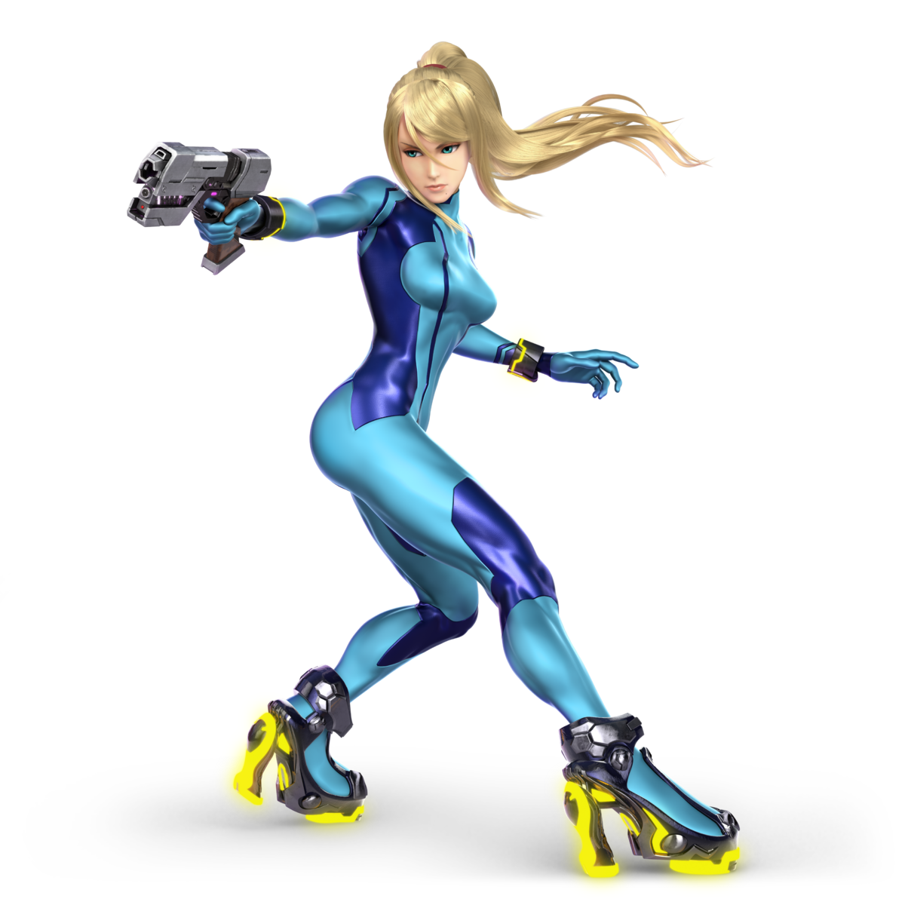

Zero Suit Samus Overview
Super Smash Bros Ultimate is a platform fighter video game that is a massive Esport in the current world. It has many characters and stages, but this site will focus on the fighter Zero Suit Samus, her moves, how she is played, and other information.
Character Background
Samus broke ground early in the gaming world when she debuted in the 1986 game Metroid. Although Samus wears the Power Suit throughout most of the Metroid series, she traditionally removes it at the end of most games, often as a result of satisfying certain conditions such as completing the game quickly or with a high percentage of the game's items collected or even both. This is known as Zero Suit Samus.
In Smash Games
- Super Smash Bros Brawl
- ZSS first appeared in Super Smash Brothers Brawl for the Nintendo Wii. She was available through a tranformation of regular Samus. In this game, she used her armour pieces as a way to damage the enemy from a distance.
- Super Smash Bros WiiU
- In this game, Zero Suit was given her own character slot on the select screen. She became a grappler character, using her long grabs to get big combos. She was a top tier character.
Smash Ultimate
Attributes
Speed
ZSS's mobility is the best in the game. With a high jump and fast dash, she can move around the whole stage.
Weight
ZSS is very light, in the top 10 lightess characters. However, this is mititgated by her not being hit often due to her speed.
Power
Her moves are not the strongest in terms of damage, but combo into each other vey well.
Gameplan
ZSS is a very hit-and-run based character. With her strong speed and long moves, she is able to hit-and-run away and get small hits where they matter. These small hits give her big combo stings, allowing her to rack up percents quickly. She also can aim to whiff punish her opponents moves by staying just out of range. At kill percents, ZSS will look for her kill moves such as Up-b and Up-smash.
Top Players
-
 Marss - Ranked 5th in the World
Marss - Ranked 5th in the World - Shky - Best in Japan
- Exodia - Best in Canada
- Doorstop - #3 in Ohio